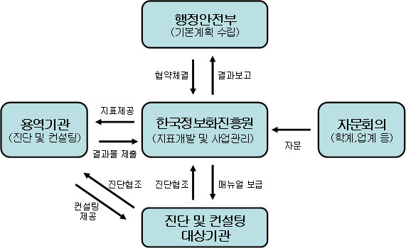

2009. 9. 행정안전부 정보화지원과
| 행정기관 웹사이트에 대한 국민의 요구수준이 높아짐에 따라 객관적 평가를통해 행정기관 간에 건전한 경쟁을 유발, 웹사이트를 발전시켜대민서비스 향상을 기하기 위한 제도로 추진 - 주관기관 : 행정자치부·중앙일보사 / 시행주기 : 매년 / 대상기관 : 전 행정기관 (중앙부처, 지자체) |
| 연도 | 최우수기관 | 비 고 | |
| 중앙부처 | 자치단체 | ||
| 2001년 | 기획예산처 | 서울특별시 | 행정기관 웹사이트 평가 위주 |
| 2002년 | 외교통상부 | 충청남도, 김해시, 순창군, 동작구 | |
| 2003년 | 정보통신부 | 울산광역시, 제주시, 고성군, 강남구 | |
| 2004년 | 해양수산부 | 경상남도, 진해시, 옥천군, 종로구 | |
| 2005년 | 관세청 | 경상북도, 김해시, 종로구, 북제주군 | |
| 2006년 | 기획예산처 | 영등포구 | 행정기관 웹사이트 진단·컨설팅 및 피드백 위주 |
| 2007년 | 산림청 | 부산광역시, 청주시, 연천군, 종로구 | |
| 진단영역(소관부서) | 진단분야 | 관련 진단업무 | |
|
1. 서비스 수준 (정보화지원과) |
1.1 민원서비스 | 1.1.1 민원 서비스의 이용 효율성 1.1.2 처리과정의 신뢰성 |
-'09 행정기관 웹사이트 진단및 컨설팅 |
| 1.2 행정정보 제공 | 1.2.1 정보의 효용성 1.2.2 행정정보의 검색성 |
||
| 1.3 국민 참여 | 1.3.1 국민 참여를 위한 상호 작용성 1.3.2 국민 참여에 위한 이용자 지원성 |
||
| 1.4 이용활성화 | 1.4.1 제공 서비스의 차별화 1.4.2 제공 서비스의 운영성 |
||
| 2. 웹 표준(정보자원정책과) | 2.1 웹 표준 준수 2.2 웹 호환성 확보 |
-'09 웹호환성 준수 진단 | |
| 3. 웹 접근성(정보문화과) | 3.1 인식 용이성 3.2 운용 용이성 3.3 이해 용이성 3.4 기술적 진보성 |
-'09 장애인 웹접근성 실태조사 | |
| 4. 개인정보보호(개인정보보호과) | 4.1 개인정보 보호정책 환경 4.2 개인정보 처리 4.3 개인정보 침해대응 |
-'09 공공기관 개인정보보호수준 진단 -공공기관 홈페이지 주민등록번호 모니터링 |
|
|
대상기관 수요조사 및 선정 |
⇒ | 진단 및 컨설팅 실시 | ⇒ | 웹사이트 진단결과 피드백 |
| 진단영역별 결과 종합 | ||||
| 우수 웹사이트 선정 |

□ 전년대비 개선사항| 진단영역 (소관) |
서비스 수준 (정보화지원과) |
웹 표준 (정보자원정책과) |
웹 접근성 (정보문화과) |
개인정보보호 (개인정보보호과) |
|---|---|---|---|---|
| 진단업무 | 행정기관 웹사이트 진단 및 컨설팅 | 행정기관 웹 호환성 진단 | 장애인 웹 접근성 실태조사 | ·공공기관 개인정보보호수준 진단 ·공공기관 홈페이지주민등록번호 모니터링(점검) |
| 진단기간 (횟수) |
'09.8~12 | '09.6월, 11월 | '09.10~12 | ·진단 : '09.5~10 ·점검 : '09.1~11 (10회) |
| 최종결과 | '10.1 | '09.12 | '10.2 | '09.12 |
| 구 분 | 기 관 명 |
| 계 | 198개 기관(중앙 22, 광역 15, 기초 162) |
| 중앙부처(22) | 국무총리실, 기획재정부, 교육과학기술부, 외교통상부, 통일부, 법무부, 행정안전부, 문화체육관광부, 지식경제부, 보건복지가족부, 환경부, 법제처, 국가보훈처, 공정거래위원회, 국민권익위원회, 조달청, 통계청, 병무청, 소방방재청, 농촌진흥청, 산림청, 기상청 |
| 서울특별시(15) | 서울시, 은평구, 노원구, 금천구, 성북구, 송파구, 영등포구, 중구, 강서구, 양천구, 광천구, 서초구, 도봉구, 성동구, 구로구 |
| 부산광역시(9) | 부산시, 중구, 영도구, 부산진구, 북구, 강서구, 연제구, 수영구, 기장군 |
| 대구광역시(9) | 대구시, 중구, 동구, 서구, 남구, 북구, 수성구, 달서구, 달성군 |
| 인천광역시(3) | 남동구, 서구, 강화군 |
| 대전광역시(6) | 대전시, 동구, 중구, 서구, 유성구, 대덕구 |
| 울산광역시(2) | 울산시, 남구 |
| 경기도(21) | 경기도, 수원시, 고양시, 안양시, 남양주시, 의정부시, 시흥시, 화성시, 파주시, 군포시, 김포시, 이천시, 구리시, 양주시, 안성시, 포천시, 하남시, 의왕시, 여주군, 과천시, 연천군 |
| 강원도(15) | 강원도, 춘천시, 원주시, 강릉시, 태백시, 속초시, 삼척시, 횡성군, 평창군, 정선군, 화천군, 양구군, 인제군, 고성군, 양양군 |
| 충청북도(9) | 충북도, 청주시, 충주시, 제천시, 보은군, 영동군, 증평군, 괴산군, 음성군 |
| 충청남도(9) | 충남도, 공주시, 논산시, 아산시, 부여군, 청양군, 홍성군, 예산군, 당진군 |
| 전라북도(12) | 전북도, 전주시, 군산시, 익산시, 정읍시, 남원시, 김제시, 완주군, 장수군, 임실군, 고창군, 부안군 |
| 전라남도(19) | 전남도, 목포시, 여수시, 순천시, 나주시, 광양시, 담양군, 곡성군, 고흥군, 장흥군, 강진군, 해남군, 영암군, 무안군, 함평군, 영광군, 장성군, 진도군, 신안군 |
| 경상북도(24) | 경북도, 포항시, 경주시, 김천시, 안동시, 구미시, 영주시, 영천시, 상주시, 문경시, 경산시, 군위군, 의성군,청송군, 영양군, 영덕군, 청도군, 고령군, 성주군, 칠곡군, 예천군,봉화군, 울진군, 울릉군 |
| 경상남도(20) | 경남도, 창원시, 마산시, 진주시, 진해시, 통영시, 사천시, 김해시, 밀양시, 거제시, 양산시, 의령군, 함안군, 창녕군, 고성군, 남해군, 하동군, 산청군, 함양군, 합천군(거창군 미신청) |
| 제주특별자치도(3) | 제주도, 제주시, 서귀포시 |
| 진단영역 | 진단분야 | 진단 세부항목 | Note |
|---|---|---|---|
| 민원서비스 | 민원 서비스의 이용 효율성 | ·민원 서비스로 신속하게 이동할 수 있는가? ·민원 서비스를 알기 쉽게 이해시키는가? ·민원 서비스를 빠른 시간 내에 완수할 수 있는가? ·민원 서비스는 개인화를 지원하는가? |
|
| 처리과정의 신뢰성 | ·민원 내용의 공개 또는 비공개를 선택할 수 있는가? ·민원처리과정에 대한 단계별 정보를 알려주는가? ·민원사무에 대한 담당자 지정 및 연락처가 공개되어 있는가? ·민원 처리에 대한 이용자 평가를 제공하는가? |
이용자 평가 점수 "checked" 없도록? 이용자 평가 통계보기 존재 유무? |
|
| 행정정보제공 | 정보의 효용성 | ·행정정보는 최신 정보로 업데이트되었는가? ·행정정보는 충실하게 제공하고 있는가? ·행정정보의 공개를 신청할 수 있는 기능을 제공하는가? ·행정정보제공에 대한 이용자 평가를 제공하는가? |
|
| 행정정보의 검색성 | ·행정정보가 체계적으로 분류되었는가? ·검색어 입력으로 원하는 행정정보를 찾을 수 있는가? |
||
| 국민참여 | 국민참여를 위한 상호작용성 | ·이용자 참여를 위한 공간을 제공하는가? ·이용자 간의 의사소통을 위한 기능을 제공하는가? ·기관장과의 대화 창구를 운영하는가? |
|
| 국민참여에 위한 이용자 지원성 | ·국민들의 질문이나 제안에 대해 신속하고 성설하게 답변하는가? ·불법/스팸 정보를 통제/관리하는가? |
||
| 이용활성화 | 제공 서비스의 차별화 | ·기관의 정체성을 효과적으로 인식시키고 있는가? ·기관만의 차별화된 서비스를 제공하는가? |
|
| 제공 서비스의 운영성 | ·계절별/시기별 이용자 욕구에 부합하는 정보를 제공하는가? ·이용자 관심을 유도할 수 있는 다양한 행사를 진행하는가? |
계절별 비쥬얼 수정이 연관 있을까? |
| 진단영역 | 진단분야 | 진단방법 | Note |
|---|---|---|---|
| 웹표준 준수 | 표준 (X)HTML 문법 준수 여부 |
·DTD 선언 여부 확인 | 준수中 |
| ·인코딩 방식 선언 여부 확인 | 준수中 | ||
| ·Validator에서 오류 개수 확인, 오류 발생비율에 따라 평가 - 오류발생비율 = 오류 수 / 페이지의 닫힌 태그 수 ※ 오류발생비율에 따라 배점 차등화 |
UI코딩 단계 : 준수中 콘텐츠코딩 : 준수 확인 필요 프로그래밍 : 준수 확인 필요 |
||
| 표준 CSS 문법 준수 여부 | ·W3C CSS Validator를 이용하여 해당 페이지에 CSS 오류 발생여부 진단(CSS 2.1 기준) |
UI코딩 단계 : 준수中이나 CSS Hack 도 일부 사용中 |
|
| 표준 Script 문법 및 DOM 준수 여부 | ·브라우저 부가기능을 이용해서 해당 페이지내 사용된 Javascript의 오류 및 경고 발생여부 진단 |
UI코딩 단계 : 준수中 프로그래밍 : 준수 확인 필요 유지보수시 : 준수 확인 필요 |
|
| 웹호환성 확보 | 정보서비스의 웹호환성 확보 여부 | ·최소 3종의 브라우저에서 동등한 레이아웃 및 기능 구현 여부 확인 |
3종이상 : IE8,7,6,FF,GC,Sa,Op UI코딩 단계 : 준수中 프로그래밍 : 준수 확인 필요 유지보수시 : 준수 확인 필요 |
| 진단영역 | 진단분야 18 | 진단 세부항목 23 |
|---|---|---|
| 인식 용이성 | 이미지에 대한 대체 텍스트의 인식 | ·텍스트가 아닌 콘텐츠에 대체 텍스트를 제공하고 있는가? ·의미나 기능이 동일한 대체 텍스트를 제공하고 있는가? |
| 배경이미지에 대한 대체 콘텐츠의 인식 | ·배경으로 사용한 이미지가 의미를 갖는 경우, 배경 이미지의 의미를 사용자가 파악할 수 있도록 대체 콘텐츠를 제공하는가? | |
| 영상매체의 인식 | ·동영상, 음성 등 멀티미디어 콘텐츠는 대체수단(자막, 원고 또는 수화)을 제공하고 있는가? | |
| 콘텐츠의 시각적 명료성 | ·색상 이외에도 명암이나 패턴으로 콘텐츠 구분이 가능한가? | |
| 운용 용이성 | 이미지맵 기법 사용 제한 | ·서버측 이미지맵을 사용하는 경우 해당 내용 및 기능을 사용할 수 있는 대체 콘텐츠를 제공하는가? |
| 프레임의 사용 | ·프레임별로 적절한 title 속성을 제공하고 있는가? | |
| 깜박거리는 객체 사용 제한 | ·깜빡이는 콘텐츠를 사용할 경우, 이에 대한 경고 및 제어할 수 있는 기능을 제공하는가? | |
| 키보드로만 운용 가능 | ·키보드만으로 콘텐츠가 제공하는 모든 기능에 대한 제어가 가능한가? ·<select>(목록상자) 사용 시 해당 목록을 선택한 후 [이동] 버튼을 반드시 제공하고 있는가? (키보드로 모든 목록을 선택할 수 있는 방법 제공) ·focus만으로 급격하게 상황이 바뀌지 않으며, 활성화 (activate)에 의해 상황이 바뀌고 있는가? |
|
| 반복 내비게이션 링크 | ·적절한 건너뛰기 링크(skip navigation)를 제공하고 있는가? | |
| 반응 시간의 조절기능 | ·이용에 시간제한이 있는 콘텐츠의 경우 시간 설정을 변경할 수 있는 기능을 제공하고 있는가? | |
| 새창의 사전 경고 | ·사용자의 입력 없이 자동으로 발생하는 새 창을 사용하는 경우는 없는가? ·사용자의 입력에 의해 발생하는 새 창은 미리 새 창임을 알리고 있는가? |
|
| 이해 용이성 | 데이터 테이블 정보 구성 | ·데이터 테이블의 내용을 이해 할 수 있는 정보를 제공하는가? |
| 데이터 테이블 구성 | ·제목 셀과 내용 셀의 구분을 위한 태그를 제공하고 있는가? | |
| 페이지의 제목 구성 | ·모든 페이지마다 페이지의 제목(<title>)을 제공하고, 페이지의 제목은 페이지의 특성을 잘 나타내도록 간단명료하게 기술하고 있는가? | |
| 페이지의 논리적 구성 | ·콘텐츠의 의미를 인식할 수 있도록 논리적으로 순서를 구성하고 있는가? ·키보드만으로 서식을 이용할 때 포커스의 이동순서가 논리적인가? |
|
| 온라인 서식 구성 | ·<label> 태그를 이용하여 서식 제어 요소와 레이블을 서로 연결하고 있는가? | |
| 기술적 진보성 | 부가 애플리케이션의 사용 | ·애플릿, Active X, Flash 등 부가 애플리케이션이 자체적인 접근성을 지원하거나 혹은 동일한 기능의 대체 콘텐츠를 제공하는가? |
| 마크업 언어의 사용 | ·자바스크립트 없이도 링크, 서식, 버튼, 페이지 제목의 기능이 작동하는가? |
| 진단영역 | 진단분야 | 진단 세부항목 | Note | |
|---|---|---|---|---|
| 개인 정보 보호 정책 환경 |
정책 기반 |
개인정보보호 조직 및 인력 | (1) 개인정보보호업무를 총괄·담당하는 부서 지정·운영여부 | |
| (2) 개인정보보호업무를 효율적으로 추진하기 위한 협의체(위원회) 구성·운영 여부 | ||||
| (3) 개인정보관리책임관(CPO) 지정 여부 | ||||
| (4) 개인정보보호담당자 지정 여부 | ||||
| (5) 분야별 책임관 및 개인정보취급자 등 지정 여부 | ||||
| 개인정보보호 예산 | (1) 개인정보보호 관련 당해년도 예산계획 수립 여부 | |||
| (2) 정보화예산대비 개인정보보호예산의 3%이상 책정 여부 | ||||
| (3) 개인정보보호 관련 중장기 예산계획 수립 여부 | ||||
| 개인정보보호 교육 | (1) 개인정보보호 교육계획 수립 여부 | |||
| (2) 행정안전부가 주관하는 개인정보보호 교육·컨퍼런스 참석 여부 | ||||
| (3) 개인정보보호 업무관계자 대상의 자체교육 실시 여부 | ||||
| (4) 전 직원 대상의 개인정보보호 자체교육 실시 여부 | ||||
| 개인정보보호 방침 | (1) 개인정보보호조직의 구성·운영에 관한 사항 반영 여부 | |||
| (2) 개인정보의 수집·저장·이용·제공·파기에 관한 사항반영 여부 | ||||
| (3) 개인정보파일관리에 관한 사항 반영 여부 | ||||
| (4) 개인정보취급업무의 위탁관리에 관한 사항 반영 여부 | ||||
| (5) 개인정보침해신고, 대응 및 권익구제에 관한 사항 반영 여부 | ||||
| (6) 개인정보보호방침 개선을 위한자체점검 등 실시 여부 | ||||
|
기술 기반 |
개인정보보호 시스템 |
(1) 키보드해킹방지솔루션 설치 여부 | ||
| (2) 백신프로그램 설치 여부 | ||||
| (3) 침입차단시스템 설치 여부 | ||||
| (4) 침입탐지시스템 설치 여부 | ||||
| (5) 웹 방화벽 설치 여부 | ||||
| 개인정보처리시스템의 접근통제 | (1) 담당자별 차등 접근권한 지정 여부 | |||
| (2) 관리자 접근시 PKI방식에 의한 접근통제 여부 | ||||
| (3) 개인정보처리구역(전산실) 출입통제를 위한 물리적 보안장치(IC카드, 바이오인식시스템, 화상관리시스템 등) 설치 여부 | ||||
| (4) 개인정보처리구역(전산실) 출입통제관련 출입대장 기록·관리 여부 | ||||
| 개인정보 저장·전송시 암호화 | (1) 개인정보 DB 중요필드의 암호화 여부 | |||
| (2) PC 개인정보파일의 암호화솔루션(DRM 등) 도입 여부 | ||||
| (3) 보조기억매체(USB, CD, DVD, 테이프 등)에 개인정보저장 시 암호화 여부 | ||||
| (4) 사용자PC부터 홈페이지(웹서버) 구간 간 암호화 여부(SSL, 구간암호화제품 적용 또는 암호화구현) | ||||
|
개인 정보 처리 |
수집 및 보유 |
개인정보수집 | (1) 개인정보 수집 시 법적 근거 또는 정보주체의 동의여부 | |
| (2) 개인정보 수집 시 정보주체에게 문서 또는 홈페이지를통해 안내 여부 | ||||
| (3) 개인정보 수집안내에 법적 근거, 수집목적, 이용범위, 보유기간, 정보주체의 권리 등 포함 여부 | ||||
| 개인정보파일대장 | (1) 개인정보파일대장 작성·관리 여부 | |||
| (2) 개인정보파일대장 내용에 보유목적·보유기관명·제공기관명·열람예정시기·열람제한정보및 사유 등 포함 여부 | ||||
| (3) 개인정보파일대장 열람 장소 지정 여부 | ||||
| (4) 개인정보파일대장 열람 장소 고시 여부 | ||||
| (5) 개인정보파일 보유·변경 시 사전협의실시 여부 | ||||
| CCTV | (1) CCTV 설치·운영 규정(계획) 수립 여부 | |||
| (2) CCTV 설치 시 사전에 전문가 또는 이해관계자로부터 의견 수렴 여부 | ||||
| (3) CCTV 설치 사실에 대한 안내판 설치(홈페이지 게재) 및 안내판에 설치목적·장소, 촬영범위·시간,관리책임자·연락처 등의 반영 여부 | ||||
| (4) CCTV 사용 시 임의조작 및 음성녹음 금지 여부 | ||||
| (5) 개인화상정보의 이용·제공시 처리정보 이용·제공대장 기록·관리 여부 | ||||
| 개인정보 저장 및 출력매체 | (1) 개인정보 출력물에 대한 워터마킹(water marking) 실시 여부 | |||
| (2) 개인정보가 수록된 이동식 저장매체의 반·출입시 반·출입대장작성 및 관리 여부 | ||||
| (3) 개인PC에서 P2P, 웹하드 등 비인가프로그램의 접속차단 여부 | ||||
|
이용 및 제공 |
개인정보 처리시스템의 접근·이용 | (1) 개인정보처리시스템의 접근에 관한 로그파일의 생성·관리 여부 | ||
| (2) 로그파일의 정기적 모니터링 및 결과 보고 여부 | ||||
| 처리정보 이용 및 제공 | (1) 처리정보 이용 및 제공시 처리정보 이용·제공대장 기록·관리 여부 | |||
| (2) 처리정보 이용 요청 또는 제공할 경우 문서를 통한 처리 여부 | ||||
| (3) 처리정보를 타기관(부서)에 제공 시 타기관(부서)의안전성 확보조치 확인 여부 | ||||
| (4) 처리정보 이용 시 안정성 확보조치 여부 | ||||
| 파기 | 개인정보 파기 절차 | (1) 개인정보파일 파기사유 발생 시 지체없이 파기 여부 | ||
| (2) 홈페이지 회원탈퇴 시 회원가입으로 수집된 개인정보파기 여부 | ||||
| (3) 개인정보 파기사실의 홈페이지, 관보 등 고지 여부 | ||||
| (4) 개인정보 파기사항의 파기대장 기록·관리 여부 | ||||
| 저장매체 등 파기 | (1) 개인정보가 수록된 저장매체의 파기계획수립 여부 | |||
| (2) 개인정보가 수록된 저장매체 파기 시 재생 불가능한방법에 의한 파기 여부 | ||||
| (3) 폐·휴지업자 출력물 폐기와 관련하여 관련 계약서에 안정성 확보 조치명시 및 그 이행사항 점검 여부 | ||||
| (4) 저장매체 등의 파기결과 상급자 보고 여부 | ||||
|
개인 정보 침해 대응 |
웹사이트개인정보 노출방지대책 |
웹사이트 개인정보 노출방지 대책 |
(1) 첨부파일 게재 시 상급자 등의 확인 여부 | |
| (2) 부주의로 인한 개인정보 게재방지를 위한 관련 경고문구(팝업창 등) 안내 여부 | ||||
| (3) 웹사이트 개인정보 노출 사전차단 필터링솔루션(웹방화벽 사전차단 기능 포함) 설치 여부 | ||||
| (4) 웹사이트 개인정보노출 자체모니터링 실시 여부 | ||||
| (5) 웹사이트 노출방지가이드라인에 의한 취약점 점검 여부 | ||||
| (6) 공공I-PIN 등 웹사이트 주민등록번호대체수단 도입 여부 | ||||
|
개인정보유출 대응절차 |
개인정보 침해사고 대응 | (1) 개인정보의 유출·침해사고에 관한 대응절차 수립 여부 | ||
| (2) 당해연도 개인정보 유출·침해사고의 미발생 여부 | ||||
| (3) 개인정보침해사고 발생 시 해당 상급기관 또는 침해신고센터에보고 여부 | ||||
| (4) 개인정보침해사고 발생관련 징계, 고발 등 사후조치 및 개선조치 여부 | ||||
|
개인정보 침해 구제절차 |
개인정보 침해구제 | (1) 개인정보 열람·정정·삭제 청구권 및 불복청구 절차 안내 여부 | ||
| (2) 개인정보 침해신고 절차 안내 여부 | ||||
| (3) 개인정보 침해신고용 창구운영 여부 | ||||
| (4) 개인정보 침해신고 발생시 처리기간 준수 여부 | ||||